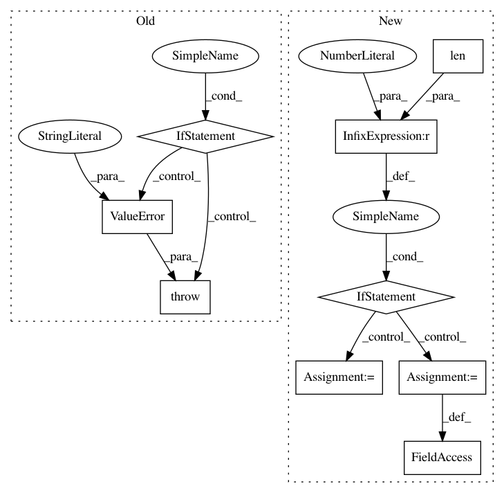

1128fb5ffc00cbd22bbec0787349937b5bb7cbca,art/attacks/evasion/adversarial_patch/adversarial_patch_tensorflow.py,AdversarialPatchTensorFlowV2,__init__,#AdversarialPatchTensorFlowV2#Any#Any#Any#Any#Any#Any#Any#Any#,67
Before Change
self.image_shape = classifier.input_shape
self._check_params()
if self.image_shape[2] not in [1, 3]:
raise ValueError("Color channel need to be in last dimension.")
if self.patch_shape is None:
self.patch_shape = self.estimator.input_shape
if self.patch_shape[2] not in [1, 3]:
After Change
if self.estimator.channels_first:
raise ValueError("Color channel needs to be in last dimension.")
self.nb_dims = len(self.image_shape)
if self.nb_dims == 3:
self.i_h = 0
self.i_w = 1
elif self.nb_dims == 4:
self.i_h = 1
self.i_w = 2
if self.patch_shape is None:
self.patch_shape = self.estimator.input_shape
if self.patch_shape[0] != self.patch_shape[1]:
In pattern: SUPERPATTERN
Frequency: 3
Non-data size: 9
Instances
Project Name: IBM/adversarial-robustness-toolbox
Commit Name: 1128fb5ffc00cbd22bbec0787349937b5bb7cbca
Time: 2020-08-19
Author: beat.buesser@ie.ibm.com
File Name: art/attacks/evasion/adversarial_patch/adversarial_patch_tensorflow.py
Class Name: AdversarialPatchTensorFlowV2
Method Name: __init__
Project Name: kwgoodman/numerox
Commit Name: 99b30e66a481b9a255f74adc6895dcd541d670f0
Time: 2018-08-31
Author: kwgoodman@gmail.com
File Name: numerox/prediction.py
Class Name: Prediction
Method Name: rename
Project Name: keras-team/keras
Commit Name: 023331ec2a7b0086abfc81eca16c84a1692ee653
Time: 2017-02-09
Author: francois.chollet@gmail.com
File Name: keras/layers/convolutional.py
Class Name: Convolution2D
Method Name: build